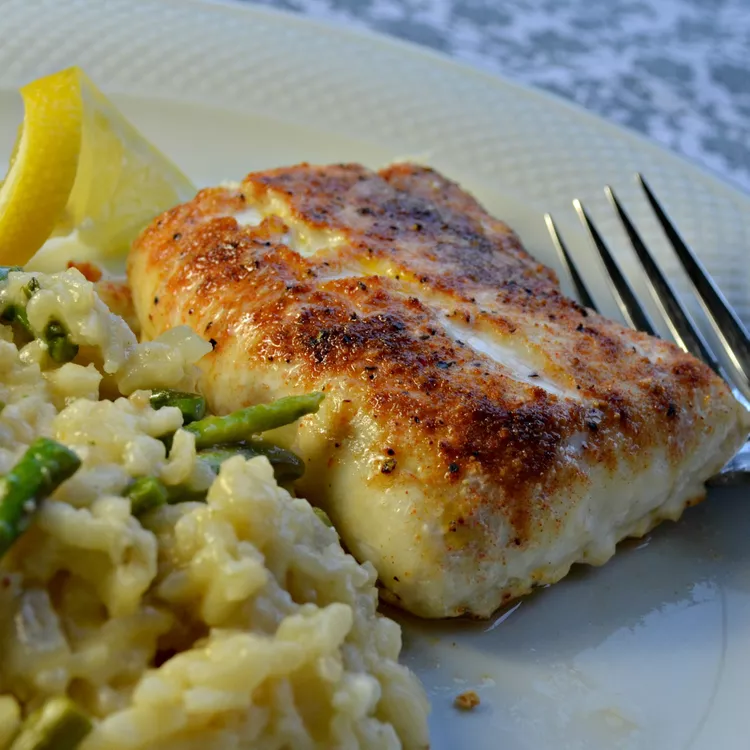

Simple Broiled Haddock

This haddock recipe is very quick and easy to make.
A blend of seasonings spices up the mild flavor of
this wonderfully light and flaky white fish.
Ingredients
- 2 pounds haddock fillets
- ½ teaspoon onion powder
- ½ teaspoon paprika
- ½ teaspoon garlic powder
- ½ teaspoon ground black pepper
- ½ teaspoon salt
- ¼ teaspoon cayenne pepper
- 1 tablespoon butter, cut in small pieces
- 1 lemon, cut into wedges
Directions
-
Set an oven rack about 6 inches from the heat source and preheat the oven's broiler.
Line a baking sheet with aluminum foil; spray with cooking spray.
-
Arrange haddock fillets on the prepared baking sheet.
-
Mix onion powder, paprika, garlic powder, black pepper, salt, and cayenne pepper in a small bowl;
sprinkle seasoning over fish, then dot with butter.
-
Broil in the preheated oven until fish flakes easily with a fork, 6 to 8 minutes.
Serve with lemon wedges.
Source